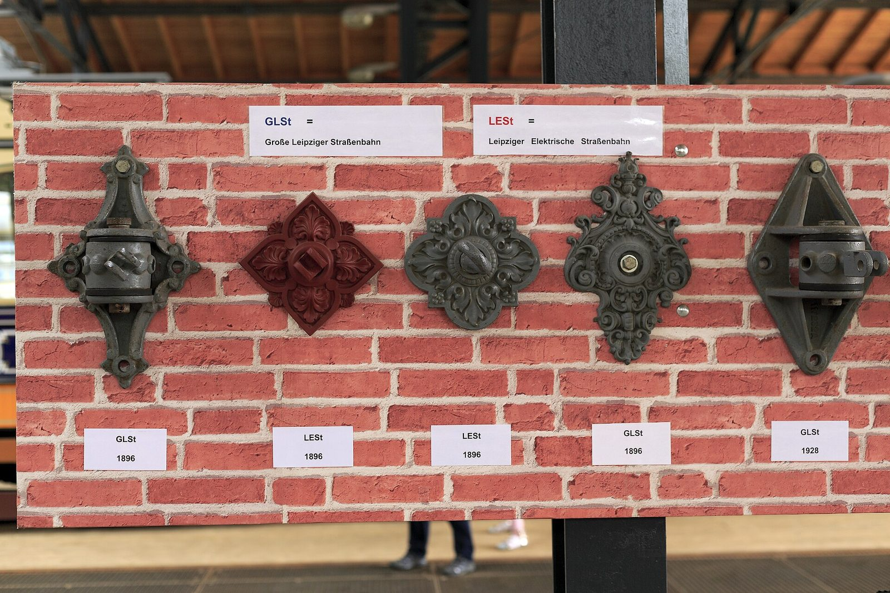
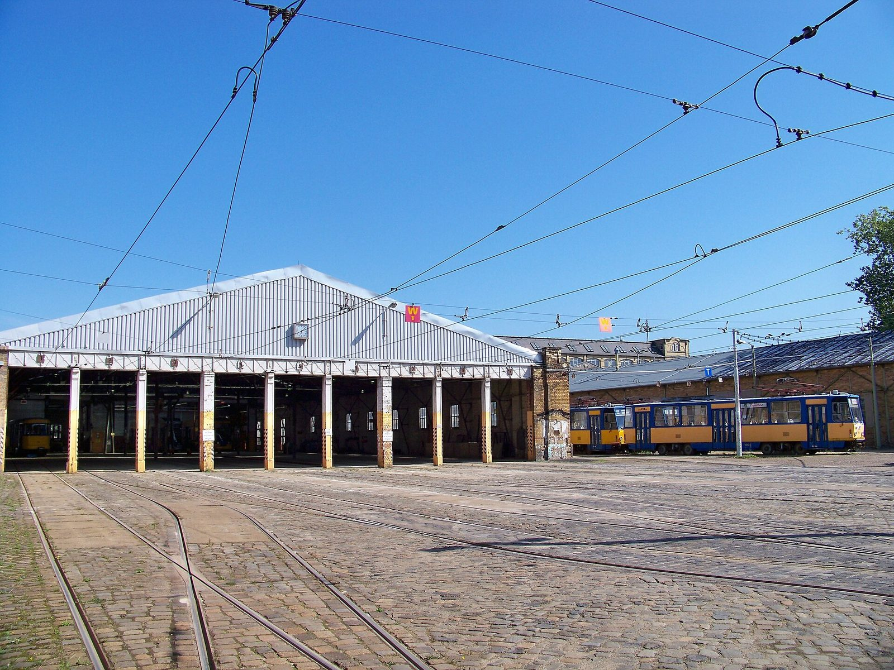

Geschichte
Seit 1872 fährt Leipzig auf Schienen
Erst mit Pferden, seit dem 17. April 1896 elektrisch – und lange Zeit mit zwei konkurrierenden Gesellschaften, der „Blauen“ und der „Roten“.
Zwei Gesellschaften
Die Blaue und die Rote
Als der elektrische Betrieb kam, fuhren in Leipzig zwei Unternehmen nebeneinander. Die Große Leipziger Straßenbahn (GLSt) hatte zum 1. Januar 1895 das rund 46 Kilometer lange Pferdebahnnetz übernommen und stellte es auf elektrischen Betrieb um. Wegen der Lackierung ihrer Wagen hieß sie im Volksmund „die Blaue“. Für die Betriebsaufnahme bestellte sie 135 Triebwagen; als Beiwagen liefen zunächst die alten Pferdebahnwagen weiter.
Die Leipziger Elektrische Straßenbahn (LESt) musste ein völlig neues Netz bauen – der Rat der Stadt erlaubte ihr anfangs nur 400 Meter gemeinsame Strecke mit der GLSt, schrieb aber gleiche Spurweite und ein kompatibles Stromabnehmersystem vor. Sie startete mit 70 Trieb- und 50 Beiwagen. Aus der roten Lackierung wurde „die Rote“.
Spuren dieser Doppelstruktur sind bis heute zu sehen – zum Beispiel an den Fahrleitungsrosetten in der Ausstellung.

Zeitleiste
Von der Pferdebahn zum Museum
-
16. Mai 1872
Leipzig eröffnet eine Pferdebahn und gehört damit zu den ersten vier Städten in Deutschland mit einer solchen Bahn.
-
1895
Die Große Leipziger Straßenbahn übernimmt zum 1. Januar das rund 46 Kilometer lange Pferdebahnnetz. Im selben Jahr entsteht an der Wittenberger Straße das Hauptdepot der Leipziger Elektrischen Straßenbahn – das Gebäude, in dem heute das Museum ist.
-
17. April 1896
Der elektrische Betrieb wird auf der Strecke Connewitz–Gohlis eröffnet. Leipzig ist damit die 31. Stadt im Deutschen Reich mit einer elektrischen Straßenbahn – später dran als Halle, Gera, Plauen, Zwickau, Chemnitz und Dresden.
-
17. April 1897
Auch die letzte der acht Pferdebahnlinien fährt elektrisch.
-
1920er Jahre
Vor der endgültigen Ausmusterung der ersten elektrischen Wagen sichern die Direktoren beider Gesellschaften je einen Triebwagen der Anfangszeit. Diese beiden Fahrzeuge begründen den späteren Museumsfahrzeugpark.
-
1943 bis 1945
Der Betriebshof an der Wittenberger Straße wird bei Bombenangriffen schwer getroffen. Ein Segment der alten Toreinfahrten ist erhalten geblieben und heute Teil der Ausstellung.
-
1947
Engagierte Straßenbahner verhindern die geplante Verschrottung der gesicherten Museumswagen und erwirken für sie einen Denkmalstatus.
-
1965
Zum Stadtjubiläum „800 Jahre Leipzig“ zeigen die Verkehrsbetriebe zwei weitere Museumsfahrzeuge. Im selben Jahr findet sich eine Gruppe zusammen, die historische Wagen ehrenamtlich erhalten will – der Anfang des heutigen Vereins.
-
März 1969
Die Gruppe beginnt mit den ersten Rekonstruktionsarbeiten: Beiwagen 751, Baujahr 1913, wird aus einer Gemüsetransportlore zurückgebaut.
-
1972
100 Jahre Straßenbahn in Leipzig. Pünktlich zum Jubiläum ist der erste in freiwilliger Arbeit restaurierte Wagen fertig; die Fahrzeugschau in der Richard-Wagner-Straße setzt neue Impulse frei.
-
Dezember 1990
Aus der Arbeitsgemeinschaft wird ein eingetragener Verein: Arbeitsgemeinschaft „Historische Nahverkehrsmittel Leipzig“, Vereinsregister Nummer 1324 beim Amtsgericht Leipzig. 1991 wird ihm die Gemeinnützigkeit zugesprochen.
-
8. Juni 1996
Zum Abschluss des Jubiläumskorsos rücken alle historischen Wagen in den Betriebshof Möckern ein – der Beginn des Museums an diesem Standort.
-
19. Mai 2019
Das Museum zeigt sich zum ersten Mal am neuen Standort Apelstraße. Über 1.800 Menschen kommen an diesem Tag. Zum Neubeginn pflanzt der Verein eine Hainbuche an der Stelle des früheren Direktionsgebäudes.

Der Ort
Ein Depot mit eigener Geschichte
Das Museum ist nicht in ein beliebiges Gebäude gezogen. Der Straßenbahnhof an der Apelstraße – früher Wittenberger Straße – war ab 1895 das Hauptdepot der Leipziger Elektrischen Straßenbahn.
Die wechselvolle Geschichte des Betriebshofes wird auf zwei Tafeln im erhaltenen Segment der alten Toreinfahrten neben Gleis 1 erzählt. Zur früheren Schleiferei gehört heute ein Konferenzraum, der Empfang liegt geschützt vor Sonne und Regen.